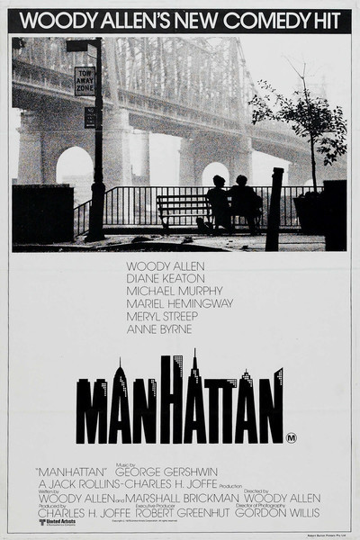
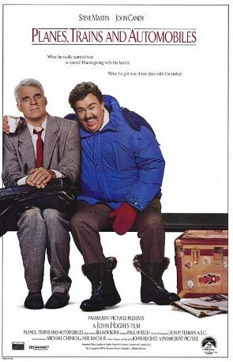

John Fish
Le Wagon Student
This is a demonstration project to learn html and css. If you're interested in learning full-stack web development in a creative atmosphere, check out Le Wagon.
Learn MorePlaces I've Lived
Berlin
Detroit
San Francisco
Chicago
Melbourne

London
Paris
My Favorite movies
The DepartedSouth Boston cop Billy Costigan (Leonardo DiCaprio) goes under cover to infiltrate the organization of gangland chief Frank Costello (Jack Nicholson). As Billy gains the mobster's trust, a career criminal named Colin Sullivan (Matt Damon) infiltrates the police department and reports on its activities to his syndicate bosses. When both organizations learn they have a mole in their midst, Billy and Colin must figure out each other's identities to save their own lives. |
|
|  |
ManhattanDirector Woody Allen's love letter to New York City stars Allen as frustrated television writer Isaac Davis, a twice-divorced malcontent facing middle age alone after his wife, Jill (Meryl Streep), leaves him for a woman. Isaac is dating fresh-faced Tracy (Mariel Hemingway), a high school girl he knows is wrong for him, and begins to wonder if he and brainy writer Mary (Diane Keaton), the mistress of his best friend, Yale (Michael Murphy), might make a better couple. |
|  |
Planes, Trains and AutomobilesEasily excitable Neal Page (Steve Martin) is somewhat of a control freak. Trying to get home to Chicago to spend Thanksgiving with his wife (Laila Robins) and kids, his flight is rerouted to a distant city in Kansas because of a freak snowstorm, and his sanity begins to fray. Worse yet, he is forced to bunk up with talkative Del Griffith (John Candy), whom he finds extremely annoying. Together they must overcome the insanity of holiday travel to reach their intended destination. |